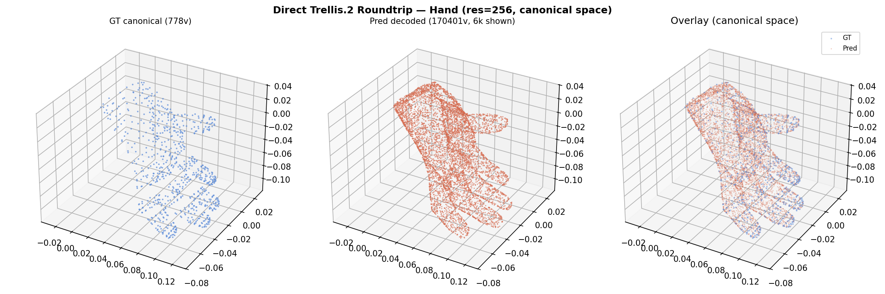
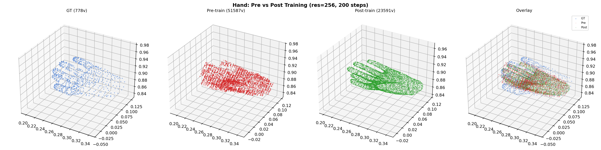
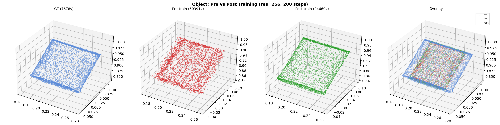

Hand: GT vs decoded in canonical space. Shapes match.

Object: GT vs decoded in canonical space. Shapes match.
Goal: Start Phase 2 — audit code alignment, fix critical issues, validate Trellis.2 integration, run first overfit experiments.
Audited all Phase 2 code (model, data, loss, Trellis native) against the PRD. Found and fixed 5 critical issues:
| # | Issue | Severity | Fix |
|---|---|---|---|
| C1 | Decoder forced eval() every forward, discarded guide_intersected | CRITICAL | Rewrote _decode_slot to respect training mode |
| C2 | freeze_decoder defaulted to True (PRD says optimize) | CRITICAL | Changed default to False |
| C3 | Config latent_dim: 64 vs Trellis.2 enforces 32 → crash at init | CRITICAL | Config fixed to latent_dim: 32 |
| C5 | Wrist sealing: seal_hand_wrist flag existed but no code called fill_holes() | CRITICAL | Added _seal_mesh method using Trellis.2 Mesh.fill_holes() |
| N1 | Per-axis normalization distorted aspect ratio (should be uniform) | CRITICAL | Changed to Phase 1 uniform scaling: (v - center) * (0.99999 / max_extent) |
Additional fixes: wired build_hoi_mesh_branch factory to Trellis2HOIMeshBranch, added hand_faces/object_faces passthrough in STream3R.forward(), made MeshRenderer import lazy, added _compute_trellis_mesh_loss hook to CausalLoss.
Verified the reference Trellis.2 encoder→decoder pipeline produces correct meshes at sparse_resolution=256.
| Branch | GT Verts | Latent Tokens | Pred Verts | Quality |
|---|---|---|---|---|
| Hand (sealed) | 778 | 640 | 170,401 | Correct shape |
| Object | 7,678 | 889 | 263,418 | Correct shape |

Hand: GT vs decoded in canonical space. Shapes match.
Object: GT vs decoded in canonical space. Shapes match.
sparse_resolution=8 which collapsed both branches to 1 latent token each, producing degenerate output. The Phase 2a config also had sparse_resolution: 8. Must use 256 to match Phase 1.
Isolated where quality degrades across the HOI3R pipeline:
| Path | Pipeline | Hand Verts | Quality |
|---|---|---|---|
| 1. Direct Trellis.2 | reference encoder → reference decoder | 170,401 | Correct |
| 2. Phase2 no bridge | _encode_slot → decoder (bypass bridge) | 170,504 | Correct |
| 3. Bridge only | _encode_slot → input_proj → output_proj → decoder | 53,563 | Degraded |
| 4. Full STream3R | _encode_slot → input_proj → global_blocks → output_proj → decoder | 53,735 | Degraded |

GT, Direct Trellis.2, Phase2 no bridge, Bridge only, Full STream3R. Paths 1&2 produce correct hand shapes. Paths 3&4 are degraded identically.

GT overlays. Paths 1&2 align with GT. Paths 3&4 are scattered due to untrained token bridge.
_encode_slot produces identical latents to the reference (diff=0.000000)Full STream3R pipeline overfit with latent-space reconstruction loss:
| Step | Latent Recon Loss | Hand Loss (monitor) | Object Loss (monitor) |
|---|---|---|---|
| 1 | 1068.10 | 0.030 | 0.042 |
| 20 | 10.54 | 0.016 | 0.024 |
| 100 | 0.027 | 0.017 | 0.024 |
| 200 | 0.0099 | 0.016 | 0.024 |

Hand: Pre-training (red) is scattered. Post-training (green) shows hand shape aligned with GT (blue). Overlay shows all three.

Object: Pre-training (red) is noise. Post-training (green) shows correct rectangular shape matching GT (blue).
| Module | Role | Init | Notes |
|---|---|---|---|
| stream3r.encoder (patch_embed + frame_blocks) | frozen | pretrained | Visual feature extraction |
| stream3r.decoder (global_blocks) | frozen | pretrained | Acts as near-identity on SLat tokens |
| trellis2.sc_encoder (FlexiDualGridVaeEncoder) | frozen | pretrained | Produces identical latents to reference |
| trellis2.sc_decoder (FlexiDualGridVaeDecoder) | frozen | pretrained | Eval-mode decode (non-differentiable mesh) |
| token_bridge (input_proj + output_proj) | optimized | random_init | 4 tensors, ~66K params. Sole training target. |
Loss: Latent-space L2 (Option B) — compare refined SLat (after STream3R attention + output_proj) vs original encoder SLat. Gradients flow through output_proj → global_blocks → input_proj.
Coordinate space: normalized_space (intermediate state). World-coordinate output is a follow-up.
Sparse resolution: 256 (required; res=8 produces degenerate 1-token latents).
The reference FlexiDualGridVaeDecoder calls flexible_dual_grid_to_mesh which is wrapped in @torch.no_grad() equivalent during eval. Training mode requires gt_intersected at the decoder's output resolution, which our pipeline doesn't produce. This blocks direct mesh supervision through the decoder.
Letting gradients flow through the Trellis.2 decoder triggers a triton.compiler.errors.CompilationError in flex_gemm (uint32/int32 signedness mismatch). Must wrap decoder in torch.no_grad() until resolved.
At grid_size=8, both hand and object compress to 1 latent token each (dim=32). This destroys all geometric information. The Phase 2a config had this setting. Must use 256+ for meaningful experiments.
The original _encode_slot used (v - min) / span - 0.5 (per-axis), stretching the mesh to fill the unit cube. Phase 1 / reference uses uniform scaling (v - center) * (0.99999 / max_extent) which preserves aspect ratio. Fixed.
Path 3 (bridge only) ≈ Path 4 (full STream3R): 53,563 vs 53,735 vertices. The pretrained global attention blocks don't meaningfully transform the extra SLat tokens. Cross-modal fusion requires unfreezing these blocks.
| Priority | Item | Details |
|---|---|---|
| P0 | Update sparse_resolution in Phase 2a config | Change from 8 to 256 in dexycb_phase2a_closed_loop_overfit.yaml |
| P1 | Unfreeze STream3R global_blocks | Enable cross-modal attention between visual tokens and SLat tokens |
| P1 | Build gt_intersected data pipeline | Required for differentiable decoder training. Needs voxelization at decoder output resolution. |
| P1 | Direct mesh supervision | Current latent L2 loss trains bridge but doesn't directly optimize mesh quality. Need chamfer / render-based loss with differentiable decode. |
| P2 | Coordinate transform: normalized → world W | Phase 2 requirement; deferred until mesh quality is acceptable |
| P2 | Bridge Lightning data path (H5) | Connect DexYCB_Multi Lightning dataloader to Trellis batch format for Hydra training |
| P2 | Fix flex_gemm Triton bug | Blocks gradient flow through decoder. May need different sparse conv backend. |
| SHA | Message |
|---|---|
4a71b02 | fix: align code with Phase 2 design requirements (C1-C5) |
457262e | fix: complete Phase 2 smoke test pipeline |
15cd942 | feat: add latent-space reconstruction loss for Phase 2 overfit |
(pending) | fix: uniform normalization, roundtrip script, 4-way comparison |
| Experiment | Link |
|---|---|
| P2-LATENT-RECON-OVERFIT-001 (res=8, deprecated) | page |
| P2-TRELLIS2-DIRECT-ROUNDTRIP-001 (res=256) | page |
| P2 Four-Way Pipeline Comparison | page |
| P2-LATENT-RECON-OVERFIT-RES256 | page |